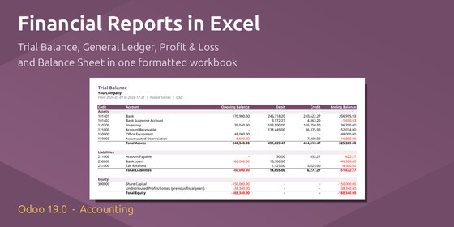

Accounting & Finance apps for Odoo
Odoo add-ons for financial reports, bank statements, invoice numbering and Indonesian accounting needs. 6 apps, 1 free, for Odoo 16 to 20.
 Bank Statement Import Indonesia - BCA, Mandiri, BRI, BNIBank statement import for Indonesian banks (BCA, Mandiri, BRI, BNI, CIMB Niaga): layout detected, Indonesian numbers and dates read, duplicates skipped.
Bank Statement Import Indonesia - BCA, Mandiri, BRI, BNIBank statement import for Indonesian banks (BCA, Mandiri, BRI, BNI, CIMB Niaga): layout detected, Indonesian numbers and dates read, duplicates skipped. Cash Advance and Petty Cash - Employee Advance SettlementEmployee cash advance with approval, payment and settlement (return or reimburse the difference), plus petty cash vouchers, with journal entries posted.
Cash Advance and Petty Cash - Employee Advance SettlementEmployee cash advance with approval, payment and settlement (return or reimburse the difference), plus petty cash vouchers, with journal entries posted.
Financial Reports Excel - Trial Balance, P&L, Balance SheetTrial Balance, Profit and Loss, Balance Sheet and General Ledger Excel export in one formatted XLSX workbook, for Odoo Community and Enterprise. Invoice Numbering with Roman Month - 001/INV/XI/2026Invoice numbering and invoice sequence with a Roman numeral month, like 001/INV/XI/2026, for invoices, bills, credit notes and entries, restarting monthly.
Invoice Numbering with Roman Month - 001/INV/XI/2026Invoice numbering and invoice sequence with a Roman numeral month, like 001/INV/XI/2026, for invoices, bills, credit notes and entries, restarting monthly. Print Journal Entries - Journal Entry Report PDFPrint journal entries as a PDF report: select one or more entries and print a clean journal voucher with debit and credit lines and balanced totals.
Print Journal Entries - Journal Entry Report PDFPrint journal entries as a PDF report: select one or more entries and print a clean journal voucher with debit and credit lines and balanced totals. Terbilang IDR - Amount in Words in Indonesian on InvoiceTerbilang: the invoice amount in words in Indonesian under the total, "Satu juta dua ratus ribu rupiah", with correct rupiah and sen rules.
Terbilang IDR - Amount in Words in Indonesian on InvoiceTerbilang: the invoice amount in words in Indonesian under the total, "Satu juta dua ratus ribu rupiah", with correct rupiah and sen rules.